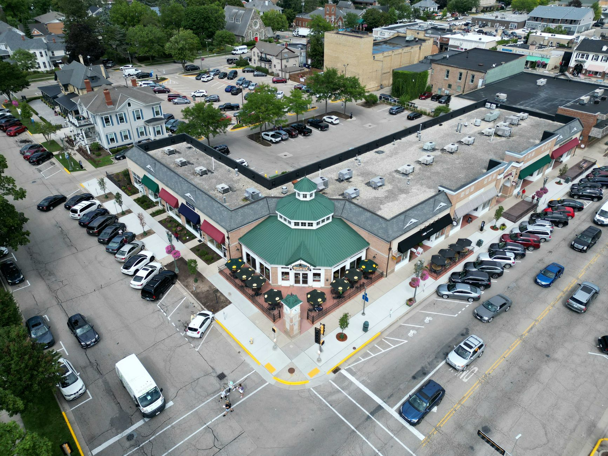
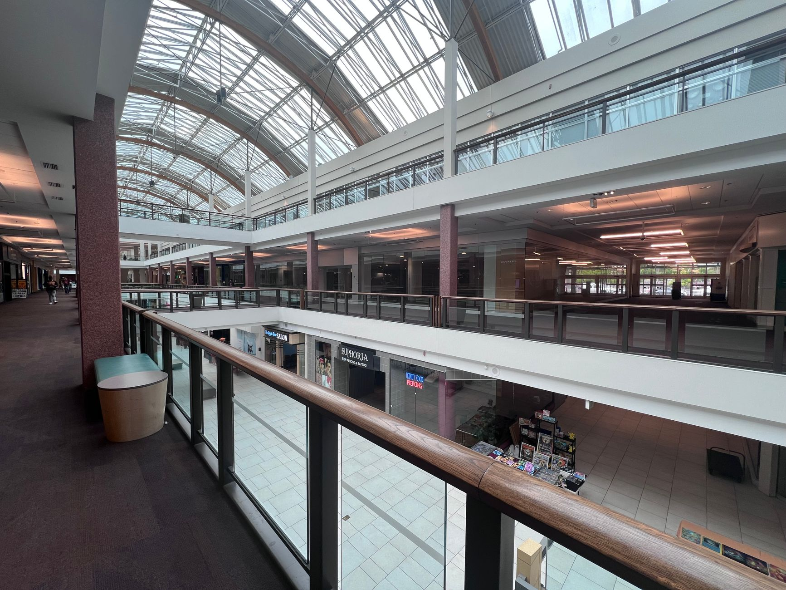

Peoria: The Northwest Valley's Next Retail Growth Corridor
Between TSMC-driven job growth, aggressive city land positioning and a wave of new mixed-use projects, Peoria is emerging as one of the Valley's most interesting retail submarkets.
Read more
Chandler Retail: Inside the East Valley's Hottest Submarket
High-wage employers, a reinventing Chandler Fashion Center and briskly-trading grocery-anchored centers make Chandler the East Valley's most competitive retail submarket.
Read more
Gilbert Retail: Inside Arizona's Hottest Suburban Submarket
Grocery anchors, national brands and a wave of mixed-use construction are turning Gilbert into the East Valley's most competitive retail submarket.
Read more
Medical Retail: The Tenant Quietly Reshaping Arizona Strip Centers
Urgent care, dental, med spas and physical therapy are backfilling Valley strip centers with strong credit and long leases — here's why it matters.
Read more
Why Grocery-Anchored Centers Anchor Phoenix Retail
Cycle after cycle, grocery-anchored centers are the most durable income in retail — and Greater Phoenix keeps proving it.
Read moreWhy Phoenix Retail Is Outperforming in 2026
Population growth, limited new supply and resilient consumer demand keep Valley retail among the tightest markets in the country.
Read moreLandlord vs. Tenant Rep: What Moves the Needle
Both sides win on preparation. Here's how representation actually changes outcomes on a retail lease.
Read more
A Buyer's Guide to Net-Lease Deals in Arizona
Single-tenant net-lease can be the most passive real estate you'll own — if you underwrite the right things.
Read more
Site Selection 101: How the Best Retailers Pick a Corner
Demographics, traffic, co-tenancy and visibility — the framework national retailers use to choose a location.
Read more
The 1031 Exchange Playbook for Retail Investors
Defer taxes and trade up — the timeline, the rules, and the pitfalls that collapse an exchange.
Read more
Tucson vs. Phoenix: Two Arizona Retail Playbooks
Both markets are healthy — but they reward very different strategies. Don't import one playbook into the other.
Read more